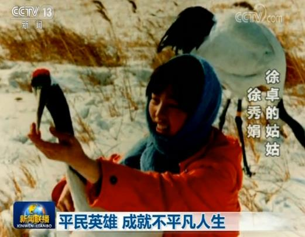
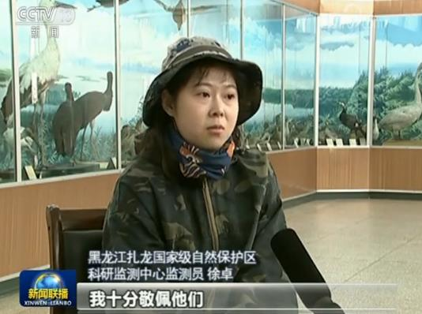
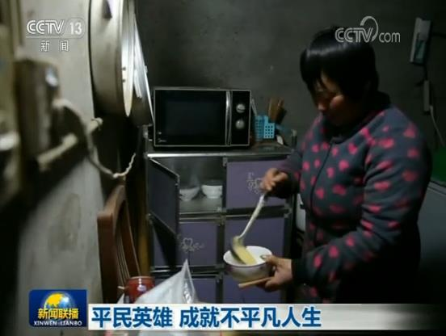
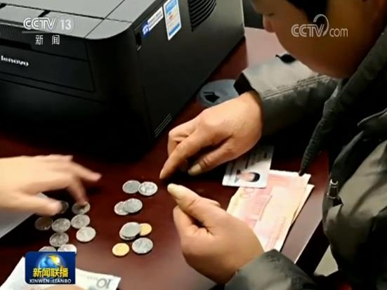
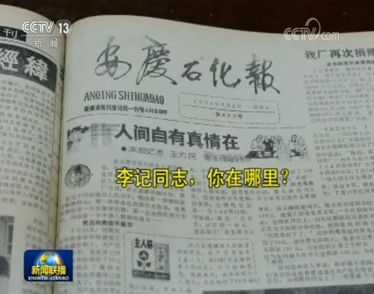
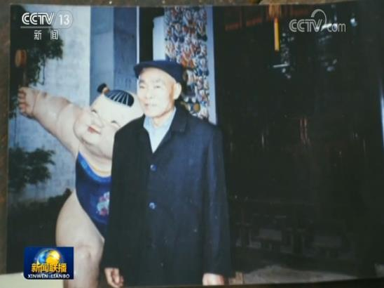

徐卓：平民英雄 成就不平凡人生

清明假期，黑龙江扎龙国家级自然保护区，游人们等来的是迁徙回来的丹顶鹤，而对于保护区监测员徐卓，这些鹤是她久违的亲人。保护丹顶鹤，已成为这个女孩一家传承了三代的使命。1975年从保护区建立起，徐卓的爷爷就成为第一批丹顶鹤人工孵化者，随后是姑姑徐秀娟的加入。这个女孩当年对丹顶鹤高达百分之百的孵化率，曾让中外专家赞叹创造了“爱的奇迹”。但她为寻找丢失的白天鹅，不幸陷入沼泽而牺牲。后人为纪念她，写下了一首歌——《一个真实的故事》，这首歌被传唱至今。

徐秀娟走了，弟弟徐建峰回到保护区，继续接力养鹤。2014年，徐建峰在湿地观察巡护的途中不幸溺水，生命定格在了48岁。在父亲牺牲后，徐建峰的女儿徐卓选择学习野生动物保护专业，并在毕业后主动回到保护区，成为了一名年轻的监测员。
现在扎龙自然保护区里有了卫星遥感技术、无人机，卫星定位让野化丹顶鹤不再走失。扎龙保护区也拥有了世界上最大的人工饲养丹顶鹤种群。
家人未完成的事业，我来干。对于施健银来说，那就是诚信。

在江苏昆山的这个建材工厂里，54岁的施健银是唯一的女工，起早贪黑地，每天吃饭只花10块钱，施健银的目标只有一个——还钱。五年前，丈夫突然病故，留下办厂欠下的30多万元借款和16名工人的工资，将近11万元。

今年1月，施健银带着有零有整的一共39000多元，来到法院，终于还清了欠16名工人的工资。对于剩下的30多万元借款，有债权人被她的诚信感动，主动打来电话表示可以慢慢还。但施健银说，只要自己还能干得动，就一定要把丈夫的欠款全部还清。

《李记同志，你在哪里？》这是1991年《安庆石化报》上刊登的一则寻人启事。这位署名“李记”的好心人，在当年安徽省颍上县遭遇特大洪水时，捐款300元。这在当时可不是个小数目。当年底，“李记”荣登安庆石化“讲奉献10件好事”榜首，但在颁奖典礼上，这个神秘人物仍然没有露面。这个答案等了28年。

今年3月20日，安庆石化88岁的老工人许惠春因病去世，子女们在整理老人遗物时，发现了一沓厚厚的汇款单，单子落款正是“李记”！30多年里，他几乎年年捐款。最近的一笔是2016年的5000元，这一年他已85岁高龄。
在许老家里，如今依然是水泥地面，除了一台旧电视机，没有一件像样的家具。给家人留下的没有一分存款，只有这些沉甸甸的捐款单。

在我们身边，还有很多像“李记”一样的平凡人在默默奉献。天津一位普通退休女工王娅，捐款捐物、帮助别人已经坚持了30年。去年被诊断出胰腺癌晚期后，她放弃了余下的治疗机会，而是捐掉所有家产，资助贫困山区的孩子们上学。
今年2月，王娅离开了。王娅的徒弟赵颖接过了接力棒，继续资助甘肃的贫困学子。
 社会信用体系建设联席成员单位
社会信用体系建设联席成员单位
 友情链接
友情链接